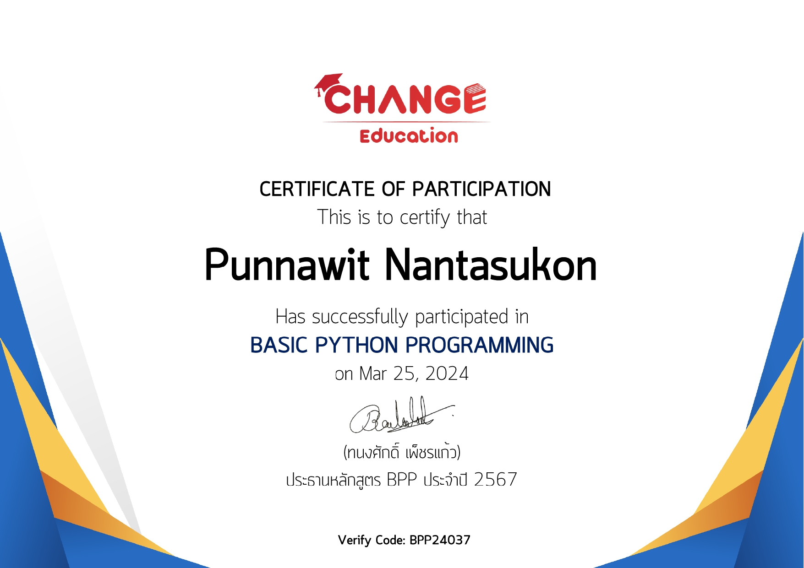

Profile
- Name: Punnawit Nantasukon
- Student ID: 6909650605
- Program: Computer Science
COMPUTER SCIENCE STUDENT
Welcome to my learning portfolio. This website presents my coursework, projects, and progress in learning web development and programming.
Explore My Work About MeGET TO KNOW ME
A little introduction about my background and interests.
I enjoy playing games and exercising in my free time. I am interested in programming, web development, artificial intelligence, and game development.
I want to keep improving my problem-solving skills and learn how to turn ideas into useful digital projects.
SELECTED WORK
Coursework and projects that show what I have practiced and learned.
Description: Created a single-page learning portfolio using HTML and CSS to introduce myself, describe my learning process, and set learning goals.
Skills: HTML, CSS, Semantic HTML, Web Browser Testing
What I did: Built the page structure and added profile information, learning goals, and a reflection section.
What I learned: Learned how HTML structures content and CSS controls the appearance of a page.
Challenge: Understanding the HTML structure and image path was challenging, so I checked the code and tested the page in a browser.
Next step: Improve the layout with Bootstrap and make the website work well on mobile screens.
Description: Participated in the Basic Python Programming training organized by CHANGE Education.
Skills: Python Programming (introductory learning)
What I did: Participated in a Basic Python Programming training session.
What I learned: The training provided an opportunity to learn about Python programming at a basic level.
Challenge: Learning programming concepts can take practice, so reviewing the material and trying small coding exercises can help improve understanding.
Next step: Continue practicing Python by writing small programs and solving beginner programming problems.

KEEP GROWING
Skills I want to develop as I continue studying Computer Science.
Build clear and accessible page structures.
Create consistent layouts that adapt to different screens.
Practice tracking changes and managing projects.
Strengthen problem-solving and build useful projects.
LOOKING BACK
Through my learning activities, I have practiced organizing web content with HTML and styling it with CSS. I learned that testing in a browser helps me identify problems and improve my work.
My next goal is to practice responsive design, use GitHub more confidently, and keep building projects. I will test my changes on both desktop and mobile screens and improve the portfolio as I learn more.